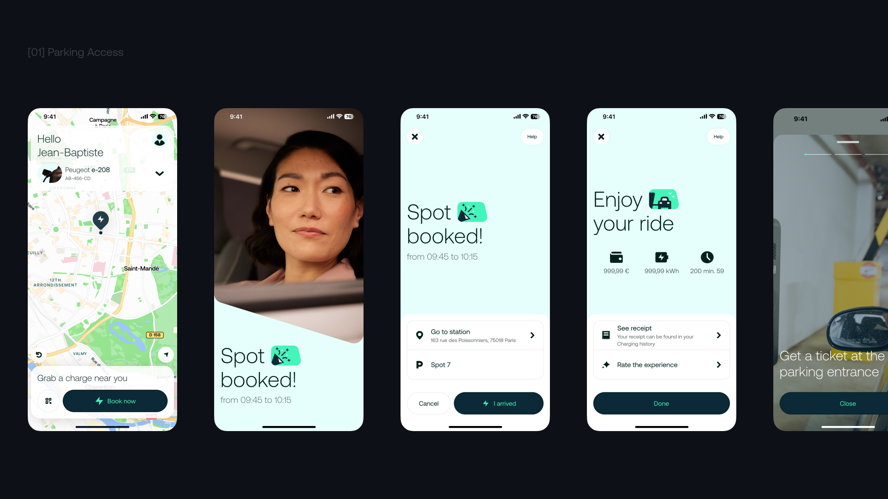
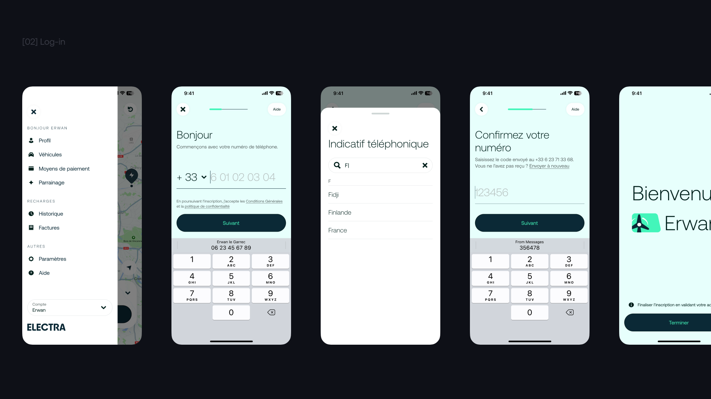
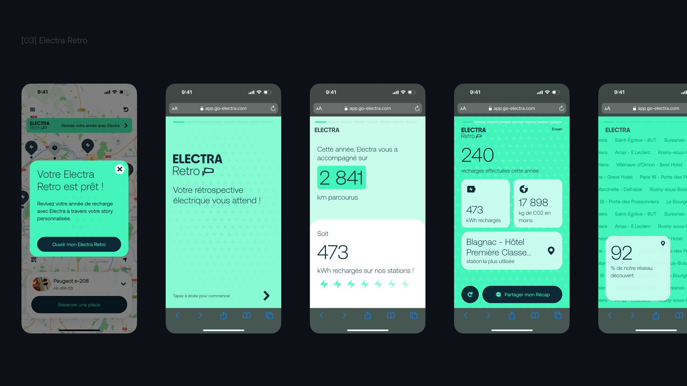

Des solutions centrées utilisateur, qui servent aussi le business.
Au fil des expériences et des projets livrés, j'ai développé un large éventail de compétences : discovery, définition et design, nourris par les insights clients.


